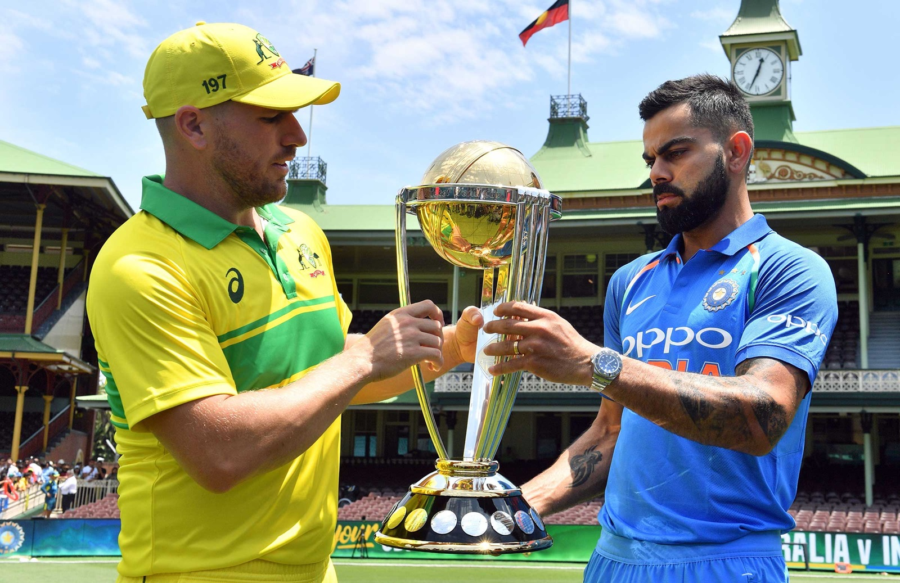

WORLD CUP 2019

Web Technology
Internal link: https://en.wikipedia.org/wiki/2019_Cricket_World_Cup
Mail Me: satish.justin747@gmail.com
Contact Me: 9080934302
The final stage of the tournament was a "Super Six" group, from which the top two teams qualified for the 2019 World Cup. The West Indies were guaranteed a spot after defeating Scotland in the penultimate round.[8] Afghanistan joined them after defeating Ireland in the final over of their match.[9] This was the first time since 1983 that Zimbabwe had failed to qualify for a World Cup contest.[10] Ireland also missed the competition for the first time since 2003,[11] and for the first time no Associate nation participated.[12]
The 2019 World Cup features 10 teams, a decrease from previous World Cups in 2011 and 2015 which featured 14 teams.[4] The hosts, England, and the top seven other teams in the ICC One Day International rankings as of 30 September 2017 earned an automatic qualification, with the remaining two spots being decided by the 2018 Cricket World Cup Qualifier
All the participating teams had to submit the names of their respective World Cup squads by 23 April 2019.[20] The teams were allowed to change players in their 15-man squad anytime up to seven days before the start of the tournament.[21] New Zealand were the first team to announce their World Cup squad.[22] The oldest player for the tournament was South African player, Imran Tahir who was forty years old while the youngest was Afghan spinner Mujeeb Ur Rahman who is eighteen years old.[23][24]
- COUNTRY TO PARTICIPATES
- India
- England
- South africa
- Australia
- West indies
- Afghanistan
- Srilanka
- Bangaldesh
- New zealand
- Pakistan
- SEMI FINALISTS
- India
- Australia
- New zealand
- England
- FINALS
- England
- New zealand
Client Side Scripting
The 2019 ICC Cricket World Cup was the 12th Cricket World Cup, a quadrennial, One Day International cricket tournament contested by men's national teams and organised by the International Cricket Council (ICC). It was hosted by England and Wales, making it the fifth time England has hosted the World Cup, beginning on 30 May and ending with the final on 14 July. The final was played at Lord's in London, where England beat New Zealand on boundary count after both the match and the subsequent Super Over finished as ties.
Server Side Scripting
The hosting rights were awarded in April 2006, after England and Wales withdrew their bid to host the 2015 ICC Cricket World Cup, which was played in Australia and New Zealand. It was the fifth Cricket World Cup played in England, following the 1975, 1979, 1983 and 1999 World Cups. Wales also hosted matches at the 1983 and 1999 tournaments, the latter also seeing matches played in Scotland, Ireland and the Netherlands.[2][3]
WORLD CUP
SEMI FINAL 1
|
SEMI FINAL 2 |
FINAL
|
NEW ZEALAND WON BY 18 RUNS |
ENGLAND WON BY 8 WICKETS
|
NEWZEALAND WON OUR HEARTS
|